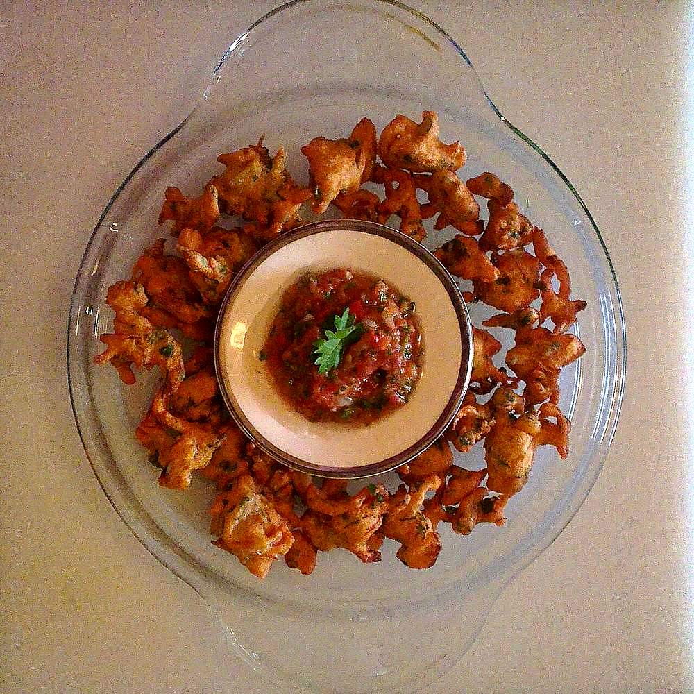

Allergens: none of the ten listed below
Ingredients
Quantities for 4.
- 5 tbsp Besanroasting it dry first is what makes this dish
- 4 medium, peeled and cut into 2cm cubes Potato
- 2 medium, finely sliced Onion
- 2 medium, chopped Tomato
- 6 cloves, crushed Garlic
- 2cm piece, grated Ginger
- 2, slit Green Chilli
- 4 tbsp Neutral Oil
- 1 tsp Cumin Seeds
- 3/4 tsp Turmeric
- 1 tsp Chilli Powder
- 2 tsp Coriander Powder
- 1 tsp Amchur
- 3 tbsp, chopped Coriander Leavesoptional
- to taste Salt
- 2 cups, hot Water
Cookware
stovetop, kadhai
Checked against the ingredient list for ten allergens: milk, egg, fish, crustaceans, tree nuts, peanuts, sesame, mustard, soy and gluten. Brands vary, so read the label on anything new to you.
Before you start
- Cube the potatoes and keep them in cold water until the moment they go in, or they will grey.
- Measure the besan before you start roasting. Once it is in the dry pan you cannot leave it for a second.
- Keep the water hot. Cold water hitting roasted besan sets it into lumps you will never whisk out.
Method
- Dry roast the besan in the kadhai over low heat for 5 minutes, stirring constantly, until it smells nutty and darkens by a shade.Low heat and no walking away. Scorched besan is bitter and there is no rescuing the dish.
- Tip the roasted besan onto a plate and set it aside to cool.
- Heat the oil in the same pan and crackle the cumin seeds for 20 seconds.
- Add the garlic, ginger and green chilli, fry 45 seconds, then add the onion and cook 8 minutes until golden.
- Add the tomato, turmeric, chilli powder and coriander powder, and cook 6 minutes until the tomato breaks down completely.
- Add the potato cubes and toss for 3 minutes so they take on the masala.
- Sprinkle the roasted besan over the potatoes and stir for 1 minute to coat them evenly.
- Pour in the hot water in a thin stream while stirring continuously, then add salt.Stream and stir at the same time. Dumping the water in at once is how you get lumps.
- Cover and simmer 15 minutes until the potatoes are tender and the gravy has thickened enough to hold a spoon mark.
- Stir in the amchur, cook 1 more minute, and finish with coriander leaves.
Storage
Keeps 3 days refrigerated. It sets almost solid when cold. Reheat with 1/3 cup water per portion, whisking as it loosens.
Nutrition Good estimate
Low protein: 10 g a serving, 10% of the calories
| Per serving443 g | Per 100 g | |
|---|---|---|
| Calories | 382 kcal | 87 kcal |
| Protein | 9.9 g | 2 g |
| Carbohydrate | 52.9 g | 12 g |
| of which sugars | 8.6 g | 2 g |
| Fibre | 8.5 g | 2 g |
| Fat | 15.8 g | 4 g |
| of which saturated | 1.7 g | 0 g |
| of which unsaturated | 13.0 g | 3 g |
Ingredients given to taste count as zero, so the real figures run a little higher. Nearest database match used for amchur. Estimated from raw ingredients using USDA FoodData Central.
More like this: Healthy Indian recipes · Vegan Indian recipes · Vegetarian Indian recipes · Gluten-free Indian recipes · Dairy-free Indian recipes · Sindhi recipes
Times, yields, allergens and nutrition are guidance. Use your own judgement on doneness and on storing. More in About.